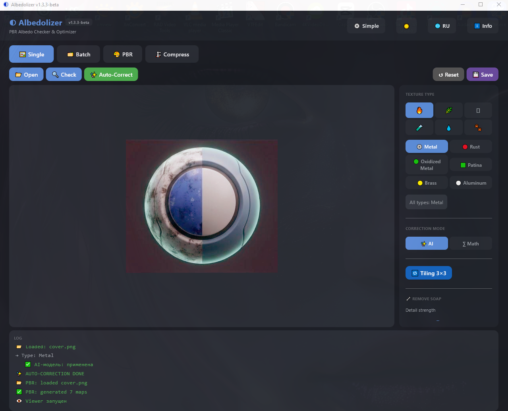
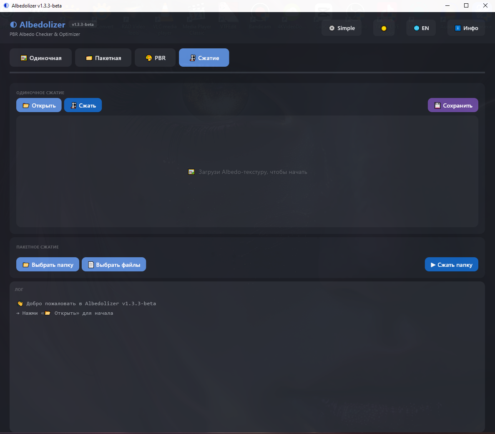

◐ Albedolizer
v1.3.3-beta1. Быстрый старт1. Quick Start
Легенда:Legend:
ГлавноеMain
ВторостепенноеSecondary
ИнфоInfo
Simple режим — три шага:
Simple mode — three steps:
- Выбери тип текстуры справаPick texture type on the right
- Нажми
✨ Auto-CorrectClick✨ Auto-Correct - Нажми
💾 SaveClick💾 Save

1
2
3
4
5
- Хедер — лого, версия, кнопки: Simple/Advanced, тема, язык, инфоHeader — logo, version, buttons: Simple/Advanced, theme, language, info
- Auto-Correct — главная кнопкаAuto-Correct — main button
- Превью — текстура и heatmapPreview — texture and heatmap
- Тип текстуры — категории и пресетыTexture type — categories and presets
- Лог — что происходитLog — what's happening
Как выбрать тип текстурыHow to pick texture type

1
2
- Категории — 6 групп: 🔥 Металл, 🌿 Природа, 🪨 Минерал, 🧪 Синтетика, 💧 Спецэффекты, 🐾 ФаунаCategories — 6 groups: 🔥 Metal, 🌿 Nature, 🪨 Mineral, 🧪 Synthetic, 💧 Special, 🐾 Fauna
- Пресеты — конкретные материалы внутри категорииPresets — specific materials inside category
Как открыть Advanced режимHow to open Advanced mode

1
- Кнопка ⚙ Advanced в хедере — тыкни, чтобы открыть все инструменты (коррекция AI/Math, soap, saturation, batch, compress)⚙ Advanced button in header — click to unlock all tools (AI/Math, soap, saturation, batch, compress)
2. Одиночная обработка (Advanced)2. Single Processing (Advanced)
Simple делает всё одной кнопкой. Advanced даёт полный контроль.
Simple does everything in one click. Advanced gives full control.

1
2
3
4
- Open / Check / Auto-Correct / Reset / Save — отдельные кнопкиOpen / Check / Auto-Correct / Reset / Save — separate buttons
- Правая панель — все настройкиRight panel — all settings
- Correction mode —
AIилиMathCorrection mode —AIorMath - Tiling 3×3 — проверка бесшовностиTiling 3×3 — seamless check
3. PBR + 3D Viewer3. PBR + 3D Viewer
Во вкладке PBR — 7 карт из одного Albedo + просмотр в 3D-вьюере.
In the PBR tab — 7 maps from one Albedo + 3D viewer preview.

1
2
3
4
5
- 🎨 Generate — сгенерировать карты🎨 Generate — generate maps
- Кнопки карт — Albedo / Height / Normal / AO / Rough / Metal / Edge / ORMMap buttons — Albedo / Height / Normal / AO / Rough / Metal / Edge / ORM
- 👁 3D Preview — открыть 3D-вьюер👁 3D Preview — open 3D viewer
- 💾 Save all — сохранить все 7 карт💾 Save all — save all 7 maps
- PNG bit depth — 8-bit или 16-bitPNG bit depth — 8-bit or 16-bit
3D Viewer — управление3D Viewer — controls

- ЛКМ + движение — вращение камерыLMB + drag — rotate camera
- Колесо мыши — зумMouse wheel — zoom
- Esc — закрытьEsc — close
4. Пакетная обработка4. Batch Processing
Вкладка Batch. Обрабатывает целую папку одним запуском.
The Batch tab. Processes a whole folder in one run.

1
2
3
- Select folder / files — выбери папку или файлыSelect folder / files — pick folder or files
- Run processing — запускRun processing — start
- Лог — по каждому файлу время и статус. Результат в папке
_correctedLog — time and status per file. Output to_corrected
5. Сжатие5. Compression
Вкладка Compress. Сжимает Albedo через LAB-преобразование.
The Compress tab. Compresses Albedo via LAB roundtrip.

1
2
3
4
- Одиночное сжатие — секция сверху. Обрабатывает один файлSingle compression — top section. Processes one file
- Открыть / Сжать — выбери файл и сожмиOpen / Compress — pick file and compress
- Сохранить — сохранить результатSave — save result
- Пакетное сжатие — секция ниже. Целая папка. Результат в
_compressedBatch compression — bottom section. Whole folder. Output to_compressed
6. Advanced — что внутри6. Advanced — what's inside
Advanced открывает все инструменты. Тоггл — кнопка ⚙ Advanced / ⚙ Simple в хедере.
Advanced unlocks all tools. Toggle — the ⚙ Advanced / ⚙ Simple button in the header.

1
2
3
4
5
- Режим коррекции —
AI(нейросеть autolevels) илиMath(CLAHE fallback). AI качественнее, Math быстрее.Correction mode —AI(autolevels neural net) orMath(CLAHE fallback). AI is better, Math is faster. - Tiling 3×3 — раскладывает текстуру в сетку 3×3 для проверки бесшовности.Tiling 3×3 — tiles texture into 3×3 grid for seamless check.
- Remove soap — убирает «мыльные» размытые участки после AI. Слайдер — сила детализации (0–3).Remove soap — removes blurry patches after AI. Slider — detail strength (0–3).
- Boost saturation — поднимает насыщенность. Множитель 0.8–1.5 (дефолт 1.15 = +15%).Boost saturation — boosts saturation. Multiplier 0.8–1.5 (default 1.15 = +15%).
- Statistics — Min/Max/Avg/Median/1%/99% яркости. Обновляется после «🔍 Check».Statistics — Min/Max/Avg/Median/1%/99% luminance. Updates after «🔍 Check».